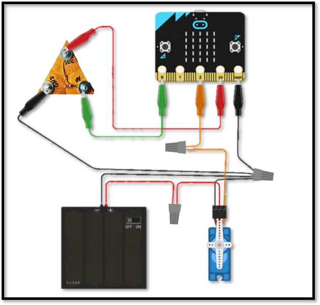

Teniendo en cuenta el proyecto anterior, en donde se construyó el módulo LDR y con la ayuda de los conectares wirenuts, realiza las conexiones que sean necesarias para completar nuestros circuitos para el presente proyecto.
| Imagen de interconexión | Detalle de interconexión |
|  |
El pin 0 deberá conectarse con la pata A0 del módulo LDR. El pin 2 deberá conectarse con el terminal amarillo del servomotor. El pin 3V del microbit deberá conectarse con la pata Vcc del módulo LDR. El pin GND deberá conectarse con la pata GND del módulo LDR, el cable negro (negativo) del portapilas y con el terminal marrón del servomotor. Por último, el cable rojo (positivo) del portapilas deberá conectarse con el terminal rojo del servomotor. |